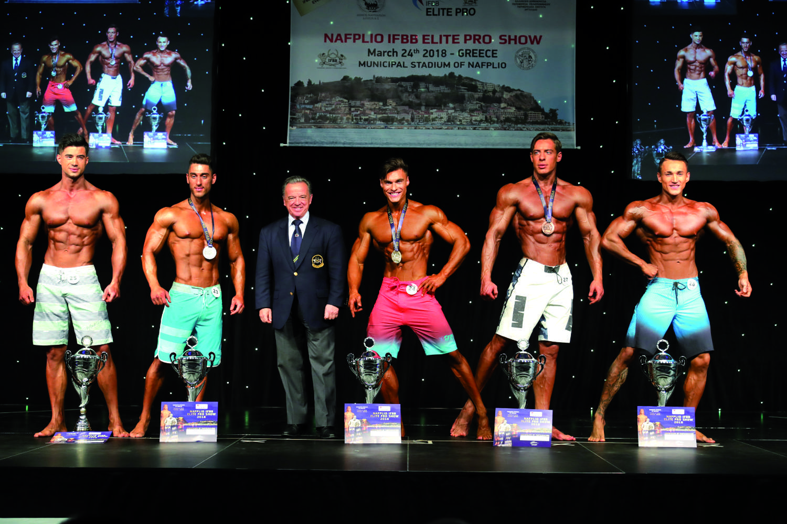
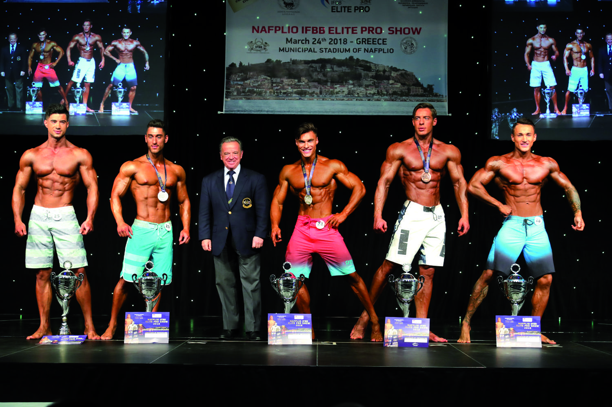

IFBB
Sobre nós
A Federação Internacional de Fisiculturismo (International Federation of Bodybuilding and Fitness - IFBB), com sede em Las Rozas (Madri), é um órgão internacional que controla a musculação e fitness, e que supervisiona muitos dos principais eventos internacionais do esporte, principalmente o Campeonato Mundial e Continental. [ 1][ 2]
Galeria
 

Contato
Email: contato@ifbb.com
Telefone: (123) 456-7890